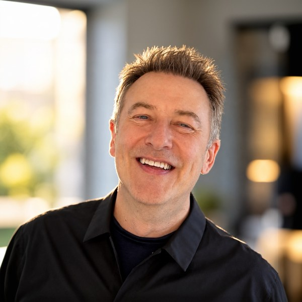

About
Design leader and inventor. Named on nine AI-centric patent applications filed by Oracle.
I grew up in Alaska drawing and painting. I studied graphic design at California College of the Arts in San Francisco, then human-computer interaction and electronic communication design at Emily Carr University in Vancouver. My first digital work was for an agency in Reykjavík, then Copenhagen, then back to San Francisco for design leadership roles at Adobe, Yahoo, Nokia, and eventually my own agency with partners in Copenhagen.
The agency built proof-of-concept work that large clients turned into real products. I missed the client side and joined the biggest of them, Amazon, in 2015. Seven years there, then eBay, now Oracle Health, where I built the platform design organization for the clinical products.
I have 15+ years building and running product design and research organizations across marketplace, commerce, and enterprise software. I design for human needs, whether the person is a customer or an employee using the company's own tools. I owned the seller experience end to end at eBay, where my team shipped eBay's first generative AI feature; led consumer product design at Amazon; and now run a platform design org at Oracle Health. I build teams, set the operating model, and ship outcomes with Product and Engineering as equal partners.